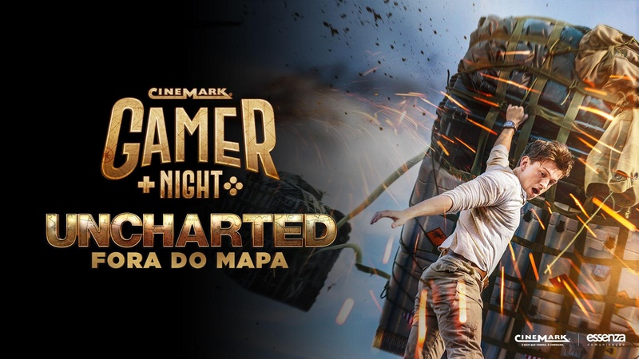

Diretores: Mathias Datow e Ruben Fleischer
Com: Antonio Banderas, Mark Wahlberg e Patricia Meeden
Gênero: Ação - Legendado
Censura: 12 anos
Tempo de duração: 111 minutos
Sinopse: Baseado no videogame de sucesso, em Uncharted, o caçador de tesouros Nathan Drake, descendente do explorador Francis Drake, inicia uma jornada em busca de um tesouro na lendária cidade sul americana de El Dorado. Lá, acabam sendo perseguidos por um grupo de mercenários que também busca o tesouro perdido.
Com: Antonio Banderas, Mark Wahlberg e Patricia Meeden
Gênero: Ação - Legendado
Censura: 12 anos
Tempo de duração: 111 minutos
Sinopse: Baseado no videogame de sucesso, em Uncharted, o caçador de tesouros Nathan Drake, descendente do explorador Francis Drake, inicia uma jornada em busca de um tesouro na lendária cidade sul americana de El Dorado. Lá, acabam sendo perseguidos por um grupo de mercenários que também busca o tesouro perdido.
@Pablo Lucas Silva Santos e @João Paulo Santos Silva - Instituto Federal do Sul de Minas Gerais - 2021